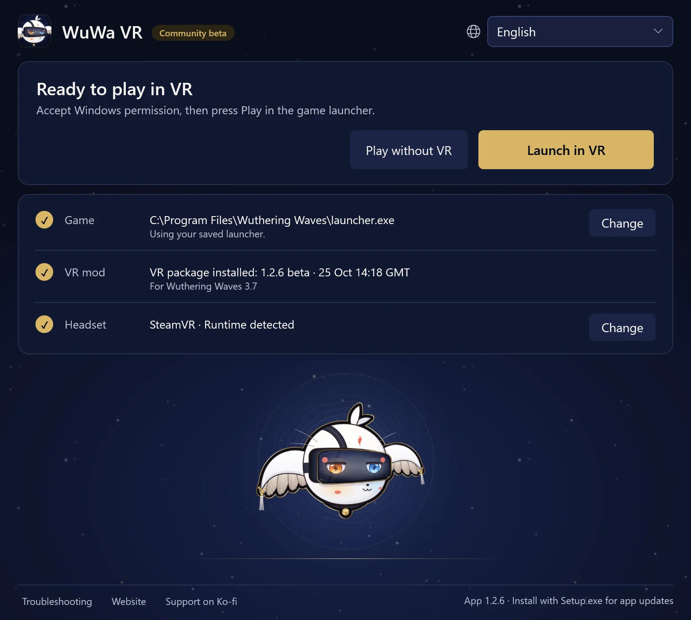

Guide1.2.6 player guide · Wuthering Waves 3.7 · Windows PCVR
Play WuWa in VR
Install WuWa-VR-Setup.exe, then open the WuWa VR shortcut. No separate Python installation is needed. The first VR-package installation needs internet; the small Setup download contains the launcher app.
Install and launch
The launcher is one screen. The headline says what comes next; under it are Launch in VR, Play without VR and three rows: Game, VR mod and Headset. Your choices are remembered, so later sessions go straight to Launch in VR.
- Game shows the Steam or official Kuro launcher copy that was found. Use Change to pick another; for Steam, choose
Wuthering Waves.exe, not the inner Shipping executable. Epic is not supported yet. - VR mod shows the installed package and the game version it is made for. The first time, read the account-risk notice and select Install VR. The package is verified before it installs, and installing does not start the game.
- Headset shows the OpenXR runtime in use, so start your headset software first. Change opens Use headset and Use bundled simulator, a desktop preview. Switching may ask for Windows permission and needs the game and its injector closed; opening, installing or updating the launcher never switches it by itself.
Launcher app is this desktop window. VR package is the mod and its tools. Updating one does not automatically update the other.


Select Launch in VR. Four steps light up as it goes: Permission (choose Yes in the Windows prompt), Press Play (in the Kuro launcher; Steam starts the game by itself), Starting VR (usually under a minute) and In VR.
In VR the launcher says You can close this window. VR keeps running. If starting VR takes longer than usual, it says so and shows the details. Stop waiting cancels the wait without closing the game.
Play without VR starts the same copy of the game normally, without the mod.
Everyday controls
Xbox / XInput is the usual gameplay path. L3 / R3 mean click the left / right stick. Not sure? Hold L3, or LT + RT, for half a second: a card rises under your view and shows what each button does, lighting each one as you press it. Release controls between shortcuts. The tables below list every shortcut, grouped like the cards.

- LTPortal window
- LBHUD / mouse mode
- ViewFirst person
- D-pad ↓First person: full animation
- RTDiorama (10×)
- RBGame / fixed camera
- MenuKeep this card open
- Y/XCamera up / down
- BShow / hide game UI
- ARecenter view
- R3WuWa VR menu
Gestures
- R3×2Freecam
- L3×2Screenshot
- LT+RT→R3Click: full VR / stereo screen
- LT+RT→R30.8 sHold: mono theatre on / off
- LT+RT→L3Click: blur on / off
- LT+RT→YPress: hide characters at your eyes
chronohaxx.github.io/wuwa-vr
PlayStation support is experimental.
Every shortcut
HOLD L3
| L3+LT | Portal window |
|---|---|
| L3+LB | HUD / mouse mode |
| L3+View | First person |
| L3+D-pad Down | First person: full animation |
| L3+RT | Diorama (10×) |
| L3+RB | Game / fixed camera |
| L3+Menu | Keep this card open |
| L3+Y/X | Camera up / down |
| L3+Y/X | Story camera: nearer / back |
| L3+Y+X | Y + X together: back to default |
| L3+B | Show / hide game UI |
| L3+A | Recenter view |
| L3+R3 | WuWa VR menu |
| R3×2 | Freecam |
| L3×2 | Screenshot |
HOLD LT + RT
| LT+RT→R3 | Click: full VR / stereo screen |
|---|---|
| LT+RT→R30.8 s | Hold: mono theatre on / off |
| LT+RT→L3 | Click: blur on / off |
| LT+RT→L30.8 s | Stereo screen on / off (hold 0.8 s) |
| LT+RT→Y | Press: hide characters at your eyes |
CAMERAS
| LB+LT/RT | Fixed: farther / closer |
|---|---|
| Hold RB | Full speed while Polar walk is on |
| While freecam is on R3×2 | |
| Left / right stick | Freecam: move / look |
| LT/LB | Freecam: rise / descend |
| RT / double RT | Freecam: boost / turbo |
MENUS & HUD
| LB+R3 | V once; hold 0.8 s for the Tab wheel |
|---|---|
| While HUD / mouse mode is on L3+LB | |
| Left stick | Move cursor |
| A/B | Click / go back |
| X+left stick | Scroll |
| D-pad | Move map |
| LT/RT | HUD nearer / farther |
| LB/RB | HUD down / up |
WUWA VR MENU
| L3+R3 | Open / close the WuWa VR menu |
|---|---|
| With the WuWa VR menu open L3+R3 | |
| D-pad / A / B | Navigate / activate / back |
| LB/RB | Change page |
| Y | Move menu |
KEYBOARD & MOUSE
| VR key | Hold the key left of 1, then press a key |
|---|---|
| VR key+1 | Full VR / stereo screen |
| VR key+2 | Mono theatre |
| VR key+3 | Portal window |
| VR key+4 | Diorama (10×) |
| VR key+B | Blur (depth of field) |
| VR key+N | Hide characters at your eyes |
| VR key+H | Show / hide game UI |
| VR key+R | Recenter view |
| VR key+P | Screenshot |
| VR key+F | First person |
| VR key+T | Game / fixed camera |
| VR key+C | Freecam |
| VR key+G | First person: full animation |
| VR key+E/Q | Camera up / down |
| VR key+E+Q | E + Q together: back to default |
| VR key+Wheel | Fixed camera closer / farther |
| VR key+M | HUD / mouse mode |
| VR key+K | Keep this card open |
| Insert | Open / close the WuWa VR menu |
| While freecam is on VR key+C | |
| WASD/Mouse | Freecam: move / look |
| Space/Ctrl | Freecam: rise / descend |
| Shift/Shift×2 | Freecam: boost / turbo |
Keyboard and mouse: Insert opens or closes the menu. In full VR an arrow shows where the mouse is on the game's menus; it hides when you use the controller. While the game is in front the mouse stays inside its window; Keep the mouse in the game window on the menu's Comfort page turns that off.
PS4 / PS5: Steam Input or another working Xbox / XInput mapping uses the same shortcuts. Cross / Circle / Square / Triangle are A / B / X / Y, L1 / R1 are LB / RB, L2 / R2 are LT / RT, Share / Create is View and Options is Menu. Experimental direct DualShock 4 and DualSense input also works when no XInput pad is active, but the game may react to the same buttons. See the full reference.
The WuWa VR menu's View page has the view, blur and close-up options. Automatic cinematic screen is on: story videos switch to mono theatre and story pictures to the stereo screen, then your view comes back; conversations keep the view you chose. The view shortcut always works.
Optional walking with VR controllers, diorama and hand demo
VR controllers (Home and Controls pages) let Quest controllers act as an Xbox pad for walking and sightseeing. They start off each launch. Hold the left Menu button for 1 second to turn them on or off (a buzz confirms); a quick press is still Start. Without a Menu button (Index), hold both stick clicks for 1 second while they are off. With VR controllers the cards name the grips, triggers and sticks.
Sharing with Xbox / treadmill is remembered: Both together (default; treadmill walking keeps working), Last used wins, or VR only. Controller slot is Automatic by default: it uses the slot that has a controller, such as Reality Runner's virtual pad. Both are on the WuWa VR menu's Controls page, with Treadmill run: while Reality Runner is open, walking starts a run that times you and saves your route in the game. See the walking reference.
Diorama needs Native Stereo and enlarges head movement with the world scale; turning it off restores your normal scale. Diorama scale on the Camera page sets its size (2× to 10×). The hand / finger demo is a visualization only, without grabbing or gestures.
Updates and rollback
When a new version of the app is available, the launcher offers it: update, then restart it when nothing is running. When the app starts with the game closed, it installs a newer VR package for the same game version by itself; the package you had stays installed. Troubleshooting → More options lists the installed and published versions and has Check for updates. A failed update check or a cached list does not mean your package is current.
This release pairs app 1.2.6 with package beta-1-2-6, for WuWa 3.7. To undo a VR-package update, close the game, then use Use previous installed version under Troubleshooting → More options. This does not roll back the launcher app. Settings, backups and recordings are kept.
If app updating is blocked, use the latest Setup from the website. Reinstalling does not stop a stuck background worker; use the recovery steps below first.
Portable fallback
Download WuWa-VR-Launcher.zip from the matching release, extract everything and open WuWa VR Launcher.exe. Keep its folders together. This opens the separate web tool interface; it does not update the installed desktop app.
If something goes wrong
Open Troubleshooting at the bottom of the launcher and try its fixes from the top. Repair mod files installs the mod's files again from a verified copy and keeps your settings. Reset mod settings puts the mod's settings back to how they shipped, after backing up yours. Save a problem report puts your logs and settings in one zip on your desktop, without your Windows user name: send it when you ask for help.
More options holds the rest: Controller check, Check launch readiness, Copy diagnostics, Open settings folder, the installed versions, Stuck launcher processes and Prepare uninstall.
- Startup stuck: use Stop waiting and allow up to four seconds. If the launcher cannot confirm that startup stopped, it offers Stuck launcher processes: choose Find stuck launcher processes, select only the worker you mean to stop, then confirm Stop selected. Nothing is preselected. Then choose Retry connection.
- Cannot close: Close launcher only closes the window and leaves background work alone. Recovery never stops WuWa, Steam, the injector or a VR runtime.
- Controller missing: Controller check reads XInput slots and HidHide information without changing settings. A connected slot does not prove the game receives the buttons.
- HUD or menus look wrong: the WuWa VR menu's Interface page has Refresh HUD layout; opening and closing ESC also lays the HUD out again. The HUD and menus use the flat game's 16:9 layout; 16:9 UI layout on the same page switches to the older, taller layout. L3 + B shows hidden game UI again.
- Menu missing: Ctrl+Shift+Home opens the WuWa VR menu and Ctrl+Shift+End the classic UEVR window, whatever the menu settings.
- Report a problem: on the WuWa VR menu's Record page, pick what went wrong and choose Save report; in the launcher, use Save a problem report. Include the app and VR-package versions, what happened and a recording if you have one, and attach them to an issue.
Removing downloaded versions or uninstalling
Troubleshooting → More options → Prepare uninstall puts your UEVR settings back to how they were before the mod (the mod's are backed up first), then removes verified downloads after you confirm, when nothing is running. Then uninstall the app in Windows Settings → Apps. The game, backups, recordings, the active OpenXR package and busy or unverified files are kept. Reinstalling does not stop a stuck background worker.
Recording and current limits
Start and stop recording from the WuWa VR menu (Record video) or from Developer tools under Troubleshooting → More options. Recording works with SteamVR and the bundled simulator, not VDXR; with SteamVR it can also record the game's sound and a microphone. Player IDs are covered while it records. Check videos for names and account details before sharing. See the feedback guide.
What was tested for this release, and the known limits, are in the release notes. Known issues include quest markers that sit a little below their target in full VR, flatter icons on the character screen (it uses the taller layout so its floor reflection stays live), moving flat-menu backgrounds and long scene or dialogue stalls. Mono theatre helps with some menus and cutscenes.
Detailed reference (English): every shortcut with a search, comfort settings and known issues.